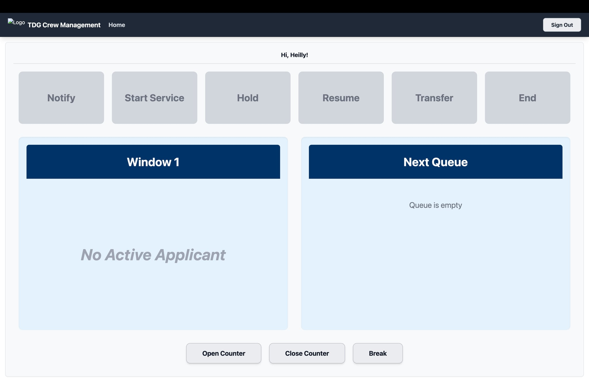
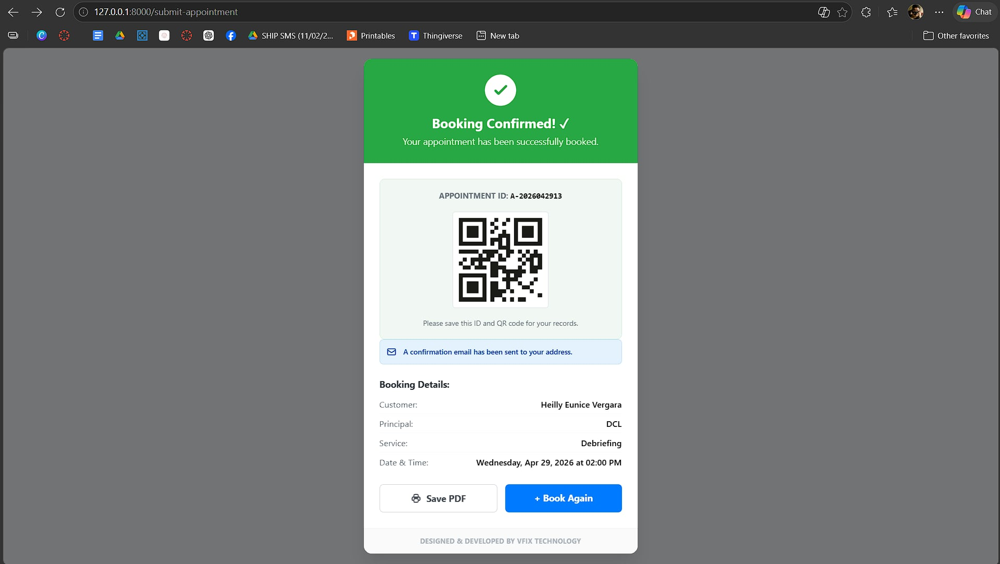

Project Detail
Appointment Booking System

Overview
This project is an enterprise-grade booking and queuing platform designed to eliminate long waiting lines and physical bottlenecks at service centers. By introducing automated scheduling and real-time visitor routing, the system addresses operational delays, delivering faster visitor processing, enhanced physical security, and structured window allocation.
Project Highlights
Screenshots

